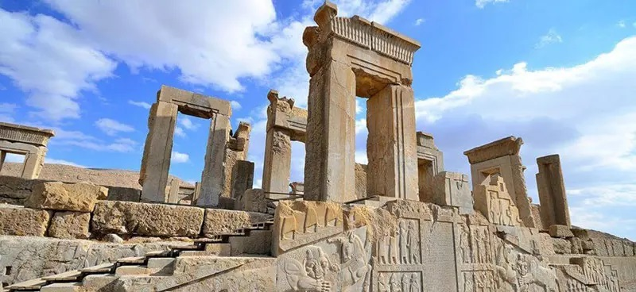
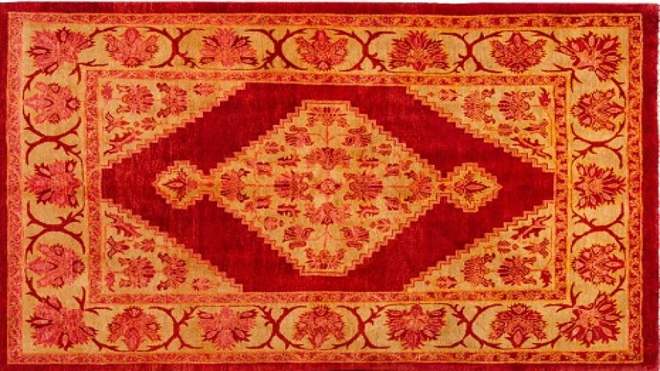

ایران، با تاریخی چند هزار ساله، یکی از کشورهای مهم و با تأثیر در منطقه خاورمیانه و جهان است. این سرزمین با تمدنهای عظیمی همچون تمدن هخامنشی، ساسانی، و صفوی در تاریخ بشری شناخته میشود و همواره در گذر زمان نقش کلیدی در تحولات جهانی ایفا کرده است. در این مقاله، به بررسی تاریخ فرهنگ ، چالشهای معاصر و چشماندازهای آینده ایران خواهیم پرداخت.
ایران در دوران باستان، با تمدنهای پیشرفتهای چون تمدن ایلامی، هخامنشی، و ساسانی شناخته میشود. دوره هخامنشی با فرمانروایی کوروش بزرگ و داریوش اول، ایران را به یکی از بزرگترین امپراطوریهای تاریخ تبدیل کرد. امپراطوری ساسانی نیز که در دوران قبل از اسلام به اوج خود رسید، یکی از رقبا و قدرتهای بزرگ روم شرقی به شمار میرفت. پس از ورود اسلام به ایران در قرن هفتم میلادی، ایران به یکی از مراکز بزرگ علم و فرهنگ اسلامی تبدیل شد. دورههای مختلف تاریخی مانند حکومتهای سلجوقی، تیموری، صفوی، قاجار و پهلوی تأثیرات زیادی بر فرهنگ، هنر و سیاست ایران گذاشتند.
ایران دارای یک تاریخ غنی فرهنگی است که شامل هنرهای تجسمی، ادبیات، موسیقی و معماری میشود. شعر فارسی با بزرگانی چون فردوسی، حافظ، سعدی، و مولانا شناخته شده است. معماری ایرانی نیز با آثار برجستهای چون مسجد شاه در اصفهان و تخت جمشید در شیراز شناخته میشود. هنرهای دستی ایران، شامل فرش بافی، سفالگری، و خوشنویسی، جزو میراث فرهنگی این سرزمین به شمار میروند. سینمای ایران نیز در سالهای اخیر موفقیتهای زیادی به دست آورده و فیلمسازانی چون عباس کیارستمی و اصغر فرهادی به شهرت جهانی رسیدهاند.
 ایران در قرن بیستم با تغییرات سیاسی و اجتماعی زیادی روبهرو بوده است. انقلاب اسلامی 1979، که به رهبری آیتالله خمینی به وقوع پیوست، به تغییرات عمدهای در ساختار سیاسی و اجتماعی ایران منجر شد. پس از انقلاب، ایران وارد یک دوره جدید از مواجهه با تحریمهای بینالمللی و تنشهای سیاسی داخلی و خارجی شد. اقتصاد ایران نیز با مشکلات زیادی مواجه است، به ویژه در دوران تحریمها و محدودیتهای اقتصادی. مسائل مربوط به حقوق بشر و آزادیهای فردی در ایران، بهویژه در دهههای اخیر، از موضوعات داغ در عرصههای بینالمللی بوده است.
آینده ایران میتواند تحت تأثیر چند عامل قرار گیرد. از یک سو، ایران با منابع طبیعی فراوان و جمعیت جوان میتواند به یک قطب اقتصادی در منطقه تبدیل شود. از سوی دیگر، چالشهای سیاسی، اجتماعی و اقتصادی ممکن است مانع این رشد شوند. همچنین، تغییرات جهانی در زمینه فناوری و ارتباطات میتواند نقش مهمی در توسعه ایران ایفا کند. در حالی که ایران در زمینههایی همچون انرژی، علوم پزشکی و فناوری اطلاعات پیشرفتهایی داشته است، پذیرش تغییرات اجتماعی و سیاسی میتواند برای کشور اهمیت زیادی داشته باشد.
ایران، با تاریخی طولانی و فرهنگ غنی، کشوری است که در بطن تحولات جهانی قرار دارد. با وجود چالشها و مشکلات معاصر، این کشور همچنان ظرفیتهای فراوانی برای رشد و توسعه دارد. به شرطی که ایران بتواند از فرصتهای موجود به بهترین نحو بهرهبرداری کرده و به سمت تغییرات مثبت اجتماعی و اقتصادی حرکت کند، میتواند در آینده نقشی برجستهتر در عرصه جهانی ایفا کند.